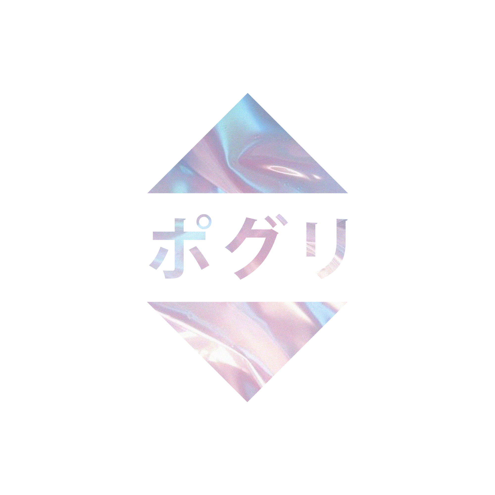

sil.via ♡
A CHAO HUB
P
O
G
L
I
.
X
Y
Z
おもいでを読み込んでいます
◆ NTSC-J ◆ MEMORY CARD SLOT 1 ◆
▸ PRESS ANY BUTTON TO SKIP
PXYZ
®
|
sil.via ♡ v2.0
|
◆ WELCOME ◆ NO DISC INSERTED ◆ MEM: 512K / OK ◆ SIGNAL: ████████░░ ◆ STANDBY MODE
◆ WELCOME ◆ NO DISC INSERTED ◆ MEM: 512K / OK ◆ SIGNAL: ████████░░ ◆ STANDBY MODE
UP: 00:00:00
|
NTSC-J
|
CE ⊕
FC
CERTIFIED

SYS
001
pogli
.xyz
SYSTEM MENU
システムメニュー
ポグリ
✦
▸
STARTPAGE
SYS
▸
DASHBOARD
DAT
▸
SERVICE HUB
HUB
▸
HOMELAB
NET
▸
HOME ASSIST.
IOT
▸
SERVER MGT.
ADM
◆ NO DISC INSERTED ◆